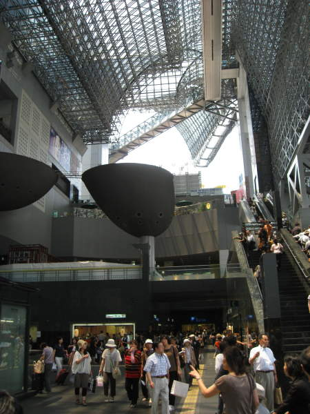
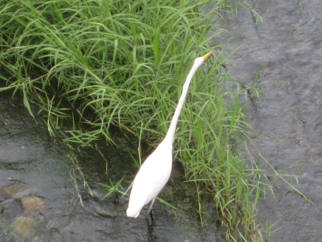
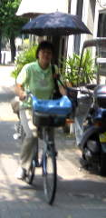
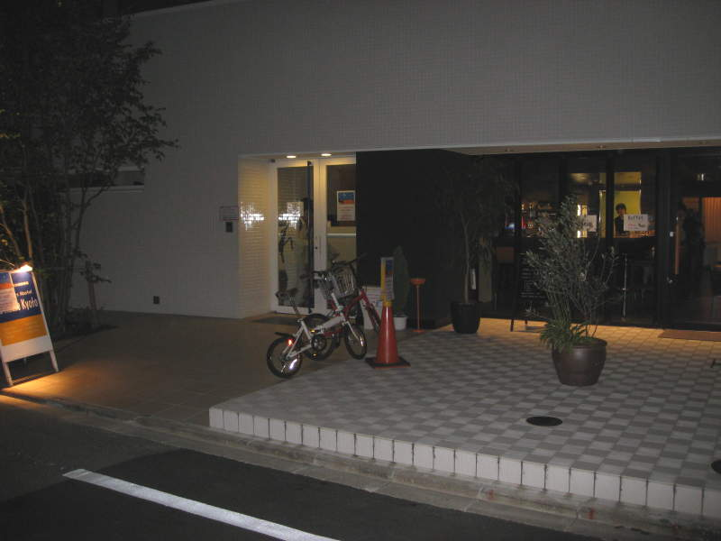
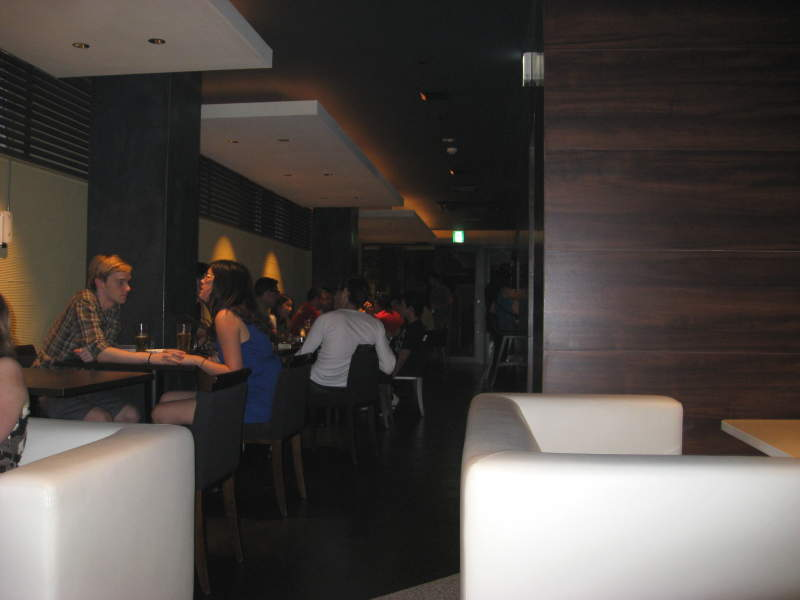
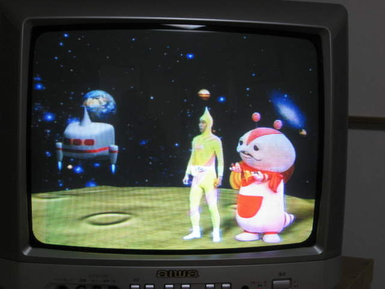
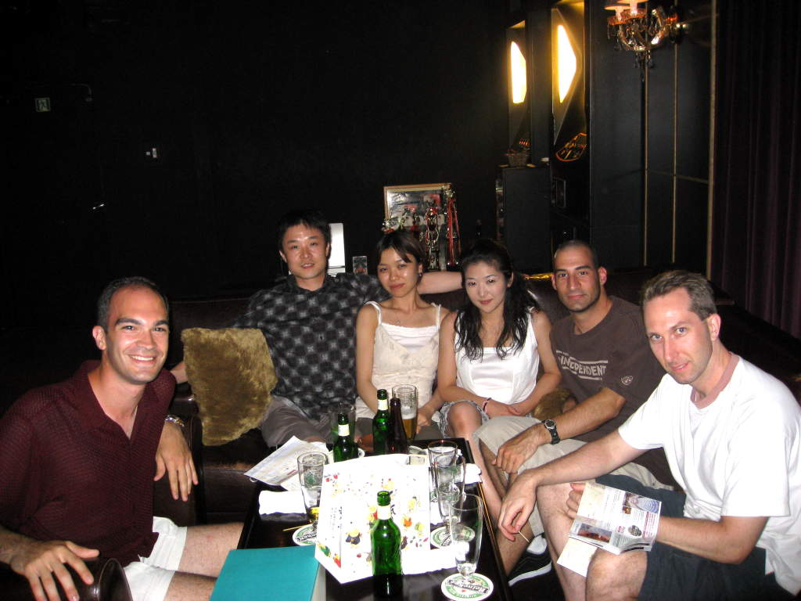

Kyoto(links to sections of Kyoto at bottom)

Kyoto Station was known for its stunning architecture.

Random bird I saw while we were trying to find our ryokan.

It
was common for Japanese to ride around on their bikes with baskets.
They'd often hold an umbrella to block the sun. I have a
hard enough time checking my watch on a bike, let alone hold an
umbrella.

This
is a hostel we passed by near our ryokan. There was a bar
attached, the Zen Cafe, which provided drinks for much cheaper than the
rest of Kyoto, and provided a friendly youthful atmosphere.

Here
are some of the people who also were fortunate enough to discover the
Zen Cafe. Most of these people were from the hostel.

This was a shot from a typical Japanese TV show we were watching in Kyoto.

This
is a nice shot of the group in Kyoto. We went drinking after the
trip to the expensive restaurant. Unfortunately, by this time,
Miller turned in for the night so he wasn't here. From right to
left, Paul, Jay, his girlfriend Chiemi, and a couple that Chiemi is
friends with. I forget their names. Then there's me of
course. On the way to this bar, Paul and I bought this tasty
treat called "mochi". These were balls about the size of truffles
that had a chewy texture to them. They were sweet and very good.
I recommend trying them. We let everyone here try it and
they liked it too.
Temple-hopping
The expensive restaurantBack